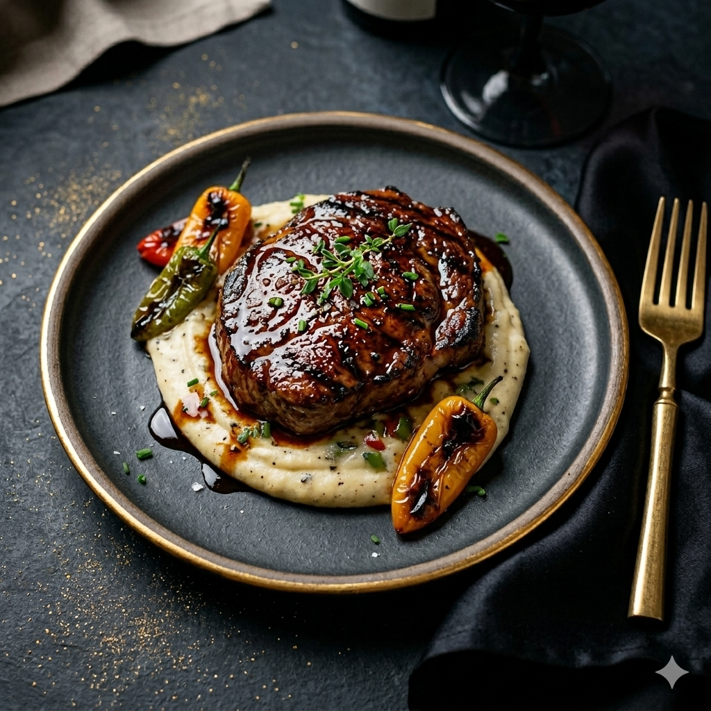

A premium ribeye steak expertly fire-grilled over open flames, developing a beautifully caramelized crust that seals in its natural juices. The meat remains tender and succulent at its core, enriched with deep, smoky undertones from the grill. Finished with a warm paprika-infused oil that adds a subtle spice and aromatic depth, and accompanied by charred garden peppers that bring a delicate sweetness and rustic balance. A bold and refined dish that celebrates the purity of flame and exceptional beef.